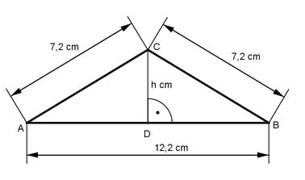

Pythagoras Aufgabe 18 Berechnen Sie die Höhe h in cm und die Fläche A des Dreiecks in cm².  Im gleichschenkligen Dreieck halbiert die Höhe die Grundseite. AB 12,2 cm AD = ---- = --------- = 6,1 cm 2 2 Satz von Pythagoras im Dreieck ADC: AC² = AD² + h² | -AD² h² = AC² - AD² h² = 7,2² cm² - 6,1² cm² = 14,6 cm² |√ h = = 3,8 cm g * h 12,2 cm * 3,8 cm A = -------- = -------------------- = 23,3 cm² 2 2